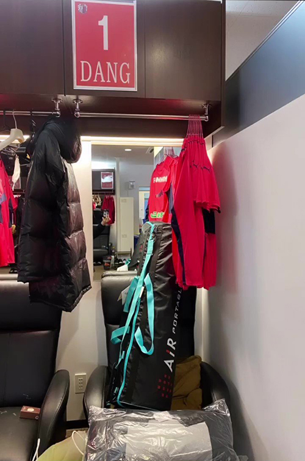

Văn Lâm khoe từ đồ riêng ở CLB Cerezo Osaka

Tú đổ của Văn Lâm tại phòng thay đổ của CLB Cerezo Osaka.
Thủ môn Văn Lâm được CLB Cerezo Osaka đăng ký thi đầu tại J-League 1 mùa giải 2021
dù chưa
sang Nhật Bản ký hợp đồng.
Hôm qua 22/2, Đặng Văn Lâm khoe trên Instagram hình ảnh tủ đồ riêng của anh tại phòng thay đổ của CLB Cerezo Osaka. Thủ thành tuyển Việt Nam đã được đội bóng
Nhật Bản đăng ký thi đầu tại J-League 1 mùa giải 2021. Đặc biệt, anh được trao áo số 1, số áo thường dành cho các thủ môn bắt chính ở các đội bóng,
chứ không phải số 32 như trước đây.
Văn Lâm đạt được thoả thuận gia nhập Cerezo Osaka hồi cuối tháng 1 vừa qua nhưng do ảnh hưởng của Covid-19 anh vẫn mắc kẹt tại Thái Lan. Thủ thành 27 tuổi
hiện cùng bạn gái Yên Xuân nghỉ dưỡng ở một resort gần biển. Anh vẫn tự tập luyện hàng ngày để duy trì thể lực.